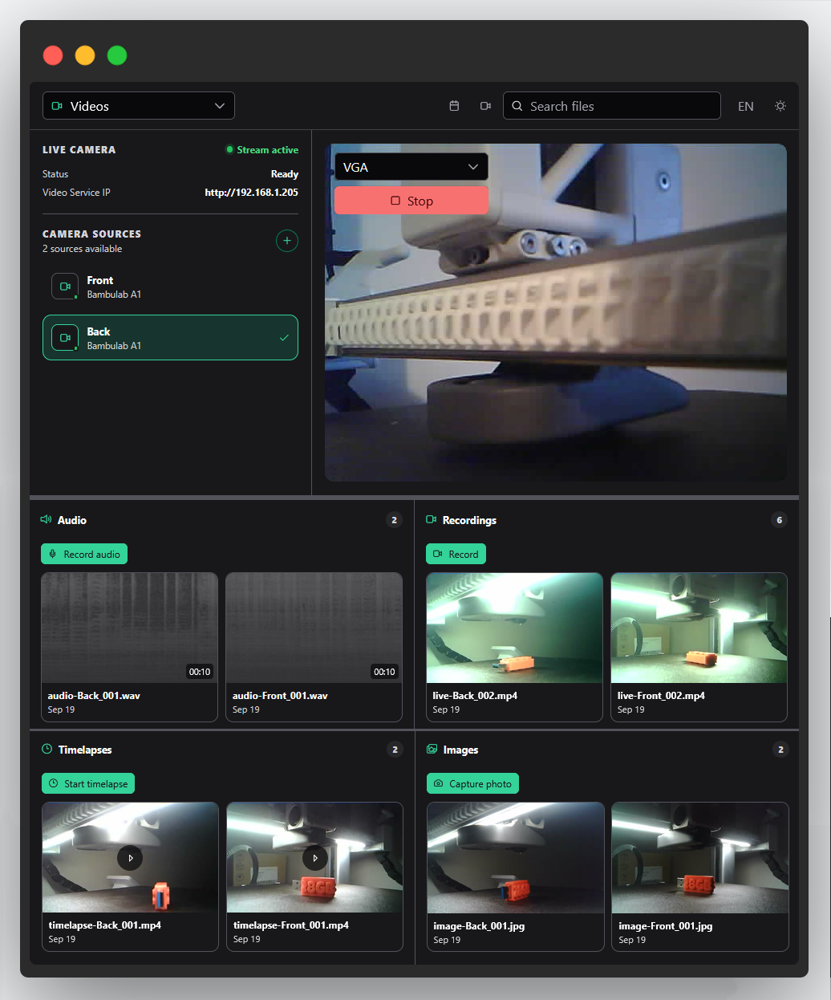
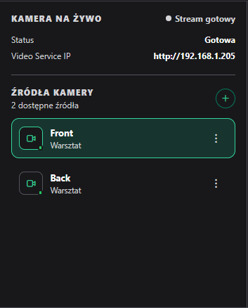
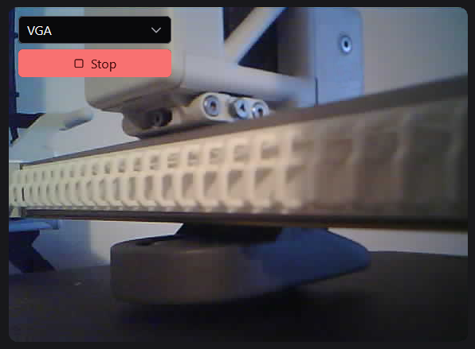
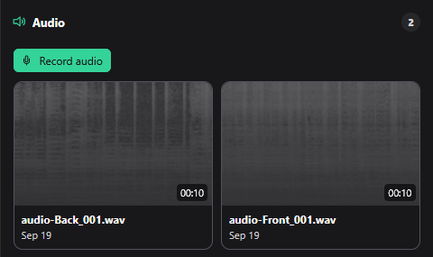
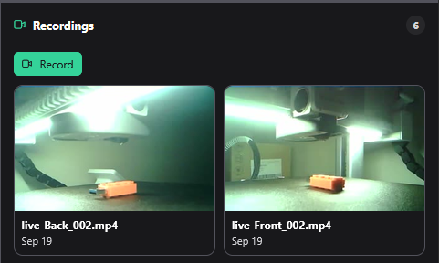
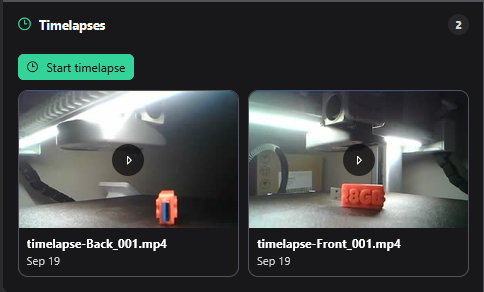
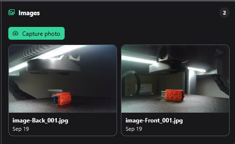

Video page
The Video page (route /videos) is the camera and media
control surface: watch live camera feeds, start recordings,
timelapses, audio captures and photo captures, browse everything
you've captured in a media library, and add or remove camera
sources. It talks to video-service-hub for streaming,
capture commands, and media storage.
Overview

The page is split vertically: the top area holds the camera panel and the live video player side by side (with an error banner above them that appears if a stream or capture command fails), and the bottom area holds the media library. Three overlays are reachable from this page:
- A media-preview overlay, opened by clicking any library item, which supports playback (recordings and timelapses of certain kinds are transcoded to MP4 for playback), renaming, and deleting the item.
- A record dialog, a form for starting a capture — its fields adapt to the action type, offering a camera source and resolution for all kinds, plus an interval and/or duration field for timelapses and audio recordings.
- An Add Camera dialog, with fields for Camera ID, Camera URL, Display name, and Location, validated client-side before submission. Each configured camera's own menu offers a matching Remove camera action.
Layout, theme & language
Filtering the media library
Because this page is centered on browsing captured media, its top bar shows three extra controls that only appear while the Video page is active:
Date filter
Opens a small calendar/date-picker popover to show only media captured on one specific day.
Camera-source filter
Opens a popover to show only media captured from one specific camera, or "All cameras".
Name search
A free-text box that filters the media library by file name as you type, case- and locale-aware.
All three filters combine: date and source and name search are applied together, and each is only applied if you've actually set it.
Light / dark mode
The Dark / Light button in the top bar toggles between light and dark theme, the same as on every other page — the choice applies immediately with no page reload. On this page, dark mode also swaps theme-specific thumbnail images, such as audio waveform thumbnails, which have separate light and dark versions.
Language (PL / EN)
The language toggle in the top bar switches every label and button between Polish and English immediately, with no page reload. Your choice is remembered for future visits.
The dashboard's own default language is Polish the first time you open it on a given browser (this documentation site itself defaults to English, independently of that).
Camera panel

Shows a "Live camera" status badge and metrics for the currently selected camera, plus the list of all configured camera sources.
Displayed information
- "Live camera" status badge (Stream active / Stream ready / Camera offline)
- Metrics list: status, power, mode, resolution, fps, temperature, camera IP, service IP
- A radio-button-style list of configured camera sources, each showing its name, a location label (such as "Printer chamber", "Build plate", or "Workshop"), and an online/offline indicator dot
Interactions
- Click a camera source to select it as the active feed
- Each source has its own menu with a Remove camera option
- An Add camera (+) button opens the Add Camera dialog described in Overview
Customization
None beyond adding, removing, or selecting camera sources — there's no separate settings panel for this widget itself.
Video player

Displays the live MJPEG feed from the currently selected camera, or a "Stream stopped" / "Camera offline" placeholder when inactive.
Displayed information
- Live MJPEG image, or a placeholder when inactive
If a frame fails to load, the widget automatically retries up to 5 times, about 1 second apart, before showing a "could not connect" message — the same retry behavior as the Management page's Live preview widget.
Interactions
- Resolution selector, including an "Automatic" option plus explicit resolutions
- Start / Stop button
The Start/Stop button is disabled while a start is in progress, or while inactive if starting isn't currently possible (for example, no camera is selected).
Customization
Choice of resolution before starting. No persisted settings.
Media library
One "Media library" panel groups everything you've captured into four sections — audio, recordings, timelapses, and images — not four separate widgets. All four live inside this single panel and share the date/source/name-search filters described in Layout, theme & language above. Every section has a header with an icon and an item count, a record-action button specific to that kind of media (disabled unless the selected camera supports it, and showing a loading spinner while a capture is starting), and a responsive grid of clickable thumbnail cards — recordings and timelapses additionally show a play-icon badge and a duration badge. Clicking any card opens the media-preview overlay for playback, rename, or delete. Each section shows a "No results" empty state when the active filters exclude everything.
Media library — Audio

Icon: a speaker/volume icon. Record button: Record audio.
Displayed information
- Section header with icon and item count
- Grid of audio-recording thumbnail cards (waveform thumbnail, theme-aware light/dark variants)
Interactions
- Record audio — starts a standalone audio recording from a camera's microphone, if supported
- Click a card to open the media-preview overlay for playback, rename, or delete
Customization
No section-specific settings beyond the shared filters above.
Media library — Recordings

Icon: a video-camera icon. Record button: Record.
Displayed information
- Section header with icon and item count
- Grid of video-recording thumbnail cards with a play-icon badge and a duration badge
Recordings captured directly from the live-view widget on the Management page (not through the record dialog) are also merged into this same section by the backend, so it shows every kind of video recording in one place.
Interactions
- Record — starts a video recording from the selected camera
- Click a card to open the media-preview overlay for playback, rename, or delete
Customization
No section-specific settings beyond the shared filters above.
Media library — Timelapses

Icon: a clock icon. Record button: Start timelapse.
Displayed information
- Section header with icon and item count
- Grid of timelapse thumbnail cards with a play-icon badge and a duration badge
Interactions
- Start timelapse — opens the record dialog to configure an interval-based capture over a longer duration, e.g. for tracking an entire print
- Click a card to open the media-preview overlay for playback, rename, or delete
Customization
No section-specific settings beyond the shared filters above.
Media library — Images

Icon: an images/gallery icon. Record button: Capture photo.
Displayed information
- Section header with icon and item count
- Grid of still-photo thumbnail cards
Interactions
- Capture photo — takes a single still photo from the selected camera
- Click a card to open the media-preview overlay for viewing, rename, or delete
Customization
No section-specific settings beyond the shared filters above.
Strona wideo
Strona wideo (trasa /videos) to powierzchnia sterowania
kamerami i mediami: podgląd kamer na żywo, uruchamianie nagrań,
timelapse'ów, nagrań audio i zdjęć, przeglądanie wszystkiego, co
zostało zarejestrowane, w bibliotece mediów, a także dodawanie lub
usuwanie źródeł kamer. Komunikuje się z video-service-hub
w zakresie strumieniowania, poleceń rejestrowania i przechowywania
mediów.
Przegląd
Strona jest podzielona pionowo: górny obszar zawiera panel kamery i odtwarzacz wideo na żywo obok siebie (z banerem błędu nad nimi, pojawiającym się, gdy polecenie strumienia lub nagrywania się nie powiedzie), a dolny obszar zawiera bibliotekę mediów. Z tej strony dostępne są trzy nakładki:
- Nakładka podglądu mediów, otwierana kliknięciem dowolnej pozycji biblioteki, która umożliwia odtwarzanie (nagrania i timelapse'y niektórych rodzajów są transkodowane do MP4 na potrzeby odtwarzania), zmianę nazwy oraz usuwanie pozycji.
- Okno dialogowe nagrywania — formularz do rozpoczęcia rejestracji, którego pola dopasowują się do rodzaju akcji: źródło kamery i rozdzielczość dla wszystkich rodzajów, a dodatkowo pole interwału i/lub czasu trwania dla timelapse'ów i nagrań audio.
- Okno dialogowe „Dodaj kamerę” z polami Identyfikator kamery, Adres URL kamery, Nazwa wyświetlana i Lokalizacja, walidowane po stronie klienta przed wysłaniem. Menu każdej skonfigurowanej kamery zawiera odpowiadającą mu akcję Usuń kamerę.
Układ, motyw i język
Filtrowanie biblioteki mediów
Ponieważ ta strona koncentruje się na przeglądaniu zarejestrowanych mediów, jej górny pasek pokazuje trzy dodatkowe elementy sterujące, widoczne wyłącznie, gdy strona wideo jest aktywna:
Filtr daty
Otwiera mały popover z kalendarzem/wyborem daty, aby pokazać tylko media zarejestrowane danego dnia.
Filtr źródła kamery
Otwiera popover, aby pokazać tylko media z jednej wybranej kamery, lub „Wszystkie kamery”.
Wyszukiwanie po nazwie
Pole tekstowe filtrujące bibliotekę mediów po nazwie pliku w trakcie pisania, z uwzględnieniem wielkości liter i ustawień regionalnych.
Wszystkie trzy filtry łączą się: data i źródło i wyszukiwanie nazwy są stosowane razem, a każdy z nich jest brany pod uwagę tylko wtedy, gdy został faktycznie ustawiony.
Tryb jasny / ciemny
Przycisk Dark / Light w górnym pasku przełącza między motywem jasnym a ciemnym, tak samo jak na innych stronach — wybór stosowany jest natychmiast, bez przeładowania strony. Na tej stronie tryb ciemny dodatkowo zamienia miniatury zależne od motywu, np. miniatury przebiegu fali dźwiękowej audio mają osobne wersje jasną i ciemną.
Język (PL / EN)
Przełącznik języka w górnym pasku zmienia natychmiast wszystkie etykiety i przyciski między polskim a angielskim, bez przeładowania strony. Wybór jest zapamiętywany na kolejne wizyty.
Domyślnym językiem samego dashboardu jest polski przy pierwszym otwarciu w danej przeglądarce (ta strona dokumentacji domyślnie ustawia angielski, niezależnie od tego).
Panel kamery
Pokazuje etykietę statusu „Kamera na żywo” oraz metryki aktualnie wybranej kamery, a także listę wszystkich skonfigurowanych źródeł kamer.
Wyświetlane informacje
- Etykieta statusu „Kamera na żywo” (Transmisja aktywna / Transmisja gotowa / Kamera offline)
- Lista metryk: status, zasilanie, tryb, rozdzielczość, fps, temperatura, IP kamery, IP usługi
- Lista źródeł kamer w formie przełączników radiowych, każda pozycja pokazuje nazwę, etykietę lokalizacji (np. „Komora drukarki”, „Stół roboczy” lub „Warsztat”) oraz wskaźnik online/offline
Interakcje
- Kliknięcie źródła kamery wybiera je jako aktywny podgląd
- Każde źródło ma własne menu z opcją Usuń kamerę
- Przycisk Dodaj kamerę (+) otwiera okno dialogowe „Dodaj kamerę” opisane w Przeglądzie
Dostosowanie
Brak poza dodawaniem, usuwaniem i wybieraniem źródeł kamer — sam widżet nie ma osobnego panelu ustawień.
Odtwarzacz wideo
Wyświetla strumień MJPEG na żywo z aktualnie wybranej kamery, lub zastępczy komunikat „Transmisja zatrzymana” / „Kamera offline”, gdy jest nieaktywny.
Wyświetlane informacje
- Obraz MJPEG na żywo lub zastępczy widok, gdy podgląd jest nieaktywny
Jeśli klatka się nie załaduje, widżet automatycznie ponawia próbę do 5 razy, w odstępach około 1 sekundy, zanim pokaże komunikat „nie udało się połączyć” — to samo zachowanie ponawiania co w widżecie Podgląd na żywo na panelu zarządzania.
Interakcje
- Wybór rozdzielczości, w tym opcja „Automatyczna” oraz rozdzielczości jawne
- Przycisk Start / Stop
Przycisk Start/Stop jest nieaktywny podczas trwającego uruchamiania, a także wtedy, gdy uruchomienie nie jest obecnie możliwe (np. nie wybrano kamery), o ile podgląd jest nieaktywny.
Dostosowanie
Wybór rozdzielczości przed uruchomieniem. Brak zapamiętywanych ustawień.
Biblioteka mediów
Jeden panel „Biblioteka mediów” grupuje wszystko, co zostało zarejestrowane, w cztery sekcje — audio, nagrania, timelapse'y i zdjęcia — a nie w cztery osobne widżety. Wszystkie cztery znajdują się w tym jednym panelu i współdzielą filtry daty/źródła/nazwy opisane w sekcji Układ, motyw i język powyżej. Każda sekcja ma nagłówek z ikoną i licznikiem pozycji, przycisk akcji nagrywania właściwy dla danego rodzaju mediów (nieaktywny, jeśli wybrana kamera go nie obsługuje, i pokazujący wskaźnik ładowania podczas rozpoczynania rejestracji), oraz responsywną siatkę klikalnych kart miniatur — nagrania i timelapse'y dodatkowo pokazują odznakę ikony odtwarzania i odznakę czasu trwania. Kliknięcie dowolnej karty otwiera nakładkę podglądu mediów umożliwiającą odtwarzanie, zmianę nazwy lub usunięcie. Każda sekcja pokazuje stan pustej listy „Brak wyników”, gdy aktywne filtry wykluczają wszystko.
Biblioteka mediów — Audio
Ikona: ikona głośnika. Przycisk nagrywania: Nagraj audio.
Wyświetlane informacje
- Nagłówek sekcji z ikoną i licznikiem pozycji
- Siatka kart miniatur nagrań audio (miniatura przebiegu fali dźwiękowej, warianty jasny/ciemny zależne od motywu)
Interakcje
- Nagraj audio — rozpoczyna samodzielne nagranie audio z mikrofonu kamery, jeśli jest obsługiwany
- Kliknięcie karty otwiera nakładkę podglądu mediów do odtwarzania, zmiany nazwy lub usunięcia
Dostosowanie
Brak ustawień specyficznych dla sekcji poza wspólnymi filtrami opisanymi powyżej.
Biblioteka mediów — Nagrania
Ikona: ikona kamery wideo. Przycisk nagrywania: Nagraj.
Wyświetlane informacje
- Nagłówek sekcji z ikoną i licznikiem pozycji
- Siatka kart miniatur nagrań wideo z odznaką ikony odtwarzania i odznaką czasu trwania
Nagrania zarejestrowane bezpośrednio z widżetu podglądu na żywo na panelu zarządzania (nie przez okno dialogowe nagrywania) są również scalane przez backend do tej samej sekcji, dzięki czemu pokazuje ona wszystkie rodzaje nagrań wideo w jednym miejscu.
Interakcje
- Nagraj — rozpoczyna nagranie wideo z wybranej kamery
- Kliknięcie karty otwiera nakładkę podglądu mediów do odtwarzania, zmiany nazwy lub usunięcia
Dostosowanie
Brak ustawień specyficznych dla sekcji poza wspólnymi filtrami opisanymi powyżej.
Biblioteka mediów — Timelapse
Ikona: ikona zegara. Przycisk nagrywania: Rozpocznij timelapse.
Wyświetlane informacje
- Nagłówek sekcji z ikoną i licznikiem pozycji
- Siatka kart miniatur timelapse'ów z odznaką ikony odtwarzania i odznaką czasu trwania
Interakcje
- Rozpocznij timelapse — otwiera okno dialogowe nagrywania, aby skonfigurować rejestrację opartą na interwałach przez dłuższy czas, np. do śledzenia całego wydruku
- Kliknięcie karty otwiera nakładkę podglądu mediów do odtwarzania, zmiany nazwy lub usunięcia
Dostosowanie
Brak ustawień specyficznych dla sekcji poza wspólnymi filtrami opisanymi powyżej.
Biblioteka mediów — Zdjęcia
Ikona: ikona galerii zdjęć. Przycisk nagrywania: Zrób zdjęcie.
Wyświetlane informacje
- Nagłówek sekcji z ikoną i licznikiem pozycji
- Siatka kart miniatur zdjęć
Interakcje
- Zrób zdjęcie — wykonuje pojedyncze zdjęcie z wybranej kamery
- Kliknięcie karty otwiera nakładkę podglądu mediów do wyświetlenia, zmiany nazwy lub usunięcia
Dostosowanie
Brak ustawień specyficznych dla sekcji poza wspólnymi filtrami opisanymi powyżej.